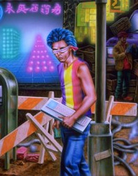
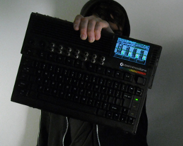
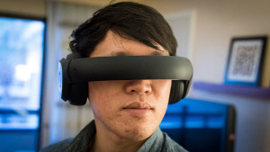

{kind=link}
{kind=link}
{kind=link}
{kind=link}
{kind=link}
{kind=link}
{kind=link}
{kind=link}
{kind=link}
{kind=link}
{kind=link}
{kind=link}
{kind=link}
{kind=link}
{kind=link}
{kind=link}
{kind=link}
{kind=link}
{kind=link}
{kind=link}

It has been few days, since I created the /r/cyberDeck subreddit. I did so, partly because I was inspired by the Building a cyberdeck article, but also partly because of few IRC discussions I participated, and because I think that there is more to this idea, than just nice cyberpunkish look and feel.
Deck or CyberDeck is this mobile computer first imagined by William Gibson in Neuromancer and later slightly extended and redefined by the Shadowrun as well as other (Cyberpunk 2020, GURPS Cyberpunk) role-play games, card games (Netrunner) and novels.
With his deck waiting, back in the loft, an Ono-Sendai Cyberspace 7. They'd left the place littered with the abstract white forms of the foam packing units, with crumpled plastic film and hundreds of tiny foam beads. The Ono-Sendai; next year's most expensive Hosaka computer; a Sony monitor; a dozen disks of corporate-grade ice; a Braun coffeemaker. Armitage had only waited for Case's approval of each piece.— GIBSON, William. Neuromancer. New York: Ace Books, 1984, 271 s. ISBN 0-441-56959-5.
(William Gibson's Neuromancer: the graphic novel volume 1. New York, N.Y.: Epic Comics, 1989, 1 v.. ISBN 0871355744.)
He snugged the surgical steel jack into the socket at his emple and his fingers flew across the keyboard of his Fuchi cyberdeck, launching him into the Matrix. His vision shifted to that dazzling electronic world of analog space where cybernetic functions took on an almost palpable reality. He ran the electron paths of cyberspace up the satellite link and down again into the Seattle Regional Telecommunications Grid. Within seconds, he was well on his way to the rendezvous with his companions inside the Renraku ar-cology.— CHARRETTE, Robert N. Never deal with a dragon. New York, N.Y., U.S.A.: Roc, 1990, 377 p. ISBN 0451450787.

(Vairous internet sources, mostly tumblr / pinterest.)
Although both in Neuromancer and in Shadowrun novels (Never Deal with a Dragon for example) is deck equipped with neural interface, it is not uncommon that it is depicted with buitin keyboard.
(Vairous internet sources, mostly tumblr / pinterest.)
Sam slid back the cover panel and pulled out the telecom connector. With a quick switch of plugs, the Elf's cyber-deck took the place of Castillano's computer. He reached for the datacord that would connect his socket with the deck. He almost changed his mind, but found courage when he remembered the innocents in the arcology who would suffer if no one tried to help. He slipped the plug in, steeling himself against the expected pain.
It came, flashing through his brain faster than before and leaving a distant malaise in its wake. Sam focused his mind on the task at hand. Turning a blind eye to the gleaming spires and pulsing data paths that surrounded him in cyber-space, he charged forward to the massive Renraku construct. Using his company passwords, he opened a portal into the main database.
Glittering rows of stars lay in serried ranks and columns all around him. Each point of light was a datafile, its tint reflecting the filing category. Sam fed the cyberdeck the key words and executed the search function. His point of view shifted with dazzling speed along the rows. He paused briefly at each file suggested by the deck, discarding useless information as he searched.
In what seemed like only a few minutes, he found it. He copied the file and fled back to where he had entered the Matrix.
"There is a counteragent," he announced to the circle of concerned faces as he pulled the data cord from his temple.
— CHARRETTE, Robert N. Never deal with a dragon. New York, N.Y., U.S.A.: Roc, 1990, 377 p. ISBN 0451450787.
The obvious inspiration for the whole cyberdeck thing was the 8bit home computers back in the era:
(Amstrad CPC 464 by DeNeMa. Only thing it is missing is neural interface ;)
(Vairous internet sources, mostly google.)
Imagine yourself passing computer store in 80's and see in the shop windows those beautiful computers. Almost no on knows what to do with them, but they are cool, flashy, with efects never seen before. Talking heads in TV talks about Hackers and information superhighways, and everyone is curious and anything seems possible. It really makes your fantasy going.
(Source: Vintage toy stores.)
Its not that hard to imagine, that that's where the deckers (cyberpunk hackers) and netrunners holding the deck, flying in 3D space and fighting computer programs came from.
Today, still a lot of people is still attracted to decks because of their cool look. With the advent of small one-board computers like Raspberry PI, you can see attempts and discussions about building the decks:

(Source: Stagediver | RadioGraffiti.)
(Portable PC project inspired by Shadowrun Cyberdeck by chimerus.)
(Active Wirehead: Building a Cyberdeck.)
So, why deck and not the notebook?
The idea of usefulness of the deck came to me from the opposite direction, than to most of the people I guess;
I was thinking a lot about what the being „digital nomad“ mean and what would be required to be truly independent, but not to give up comfort of having the two displays, one of which is big 27" LCD. I work as a programmer (did you know, that there is /r/HMDprogramming? :)), and big monitor directly contributes to my productivity. I really need a lot of space for editor, terminals and other stuff I deal with.
Consider following example:
And that's just one of 16 virtual desktops I use, others filled with documentation, server connections, database consoles and similar stuff. If you try to cram all that stuff on small notebook screen, it just isn't right and context switching can get annoying really quickly:
So I was thinking; how would be possible to have all the comfort of big screen and still be the nomad, always on the road? Pretty soon, it was obvious, that you would have to have either big caravan (or maybe a camel with LCD holder :P), or HMD display.

(This year should be good year for Head Mounted Displays. From left to right: HTC Vive, Oculus Rift, Sony project Morpheus, Razer OSVR, Rapture HMD and Avegant Glyph.)
But most of the notebooks will have problems to handle the HMD, because of high requirements on GPU, which also means high power consumption (that is also true for decks, but you are not limited by screen size and the limits for notebooks). Also the idea of having the display and the HMD at the same time is just pointless (you won't see it with HMD on and is also unnecessary power consumption). So, that's how the idea of decks came into my mind.
I think, that in the near future, there is relatively big fraction of computer market share for the decks.
Given unlimited budget and access to good workshop, I've would build highly customized workstation, with highly custom software.
There is this piece of email conversation between me and Pavel Křivánek, which I can't forget:
> ... Myslím, že si časem taky zkusím napsat jednoduchý interpret smalltalku, tím se to člověk nejlépe naučí.Jestli můžu radit, zkus rovnou interpret Selfu. Ty nuance toho, jak geniálně pracuje s lexikálními prostory, aktivačními objekty apod. jsou naprosto kulervoucí :-)
> Poslední dobou mě taky zaujal Squeak, trochu si s ním hraju a zdá se mi, že tam jsou hodně zajímavé věci, které ještě musím prozkoumat. Hodně mi přijde, že tam byl kladen důraz na synergii člověka se softwarem (ala Engelbart), na úkor běžného sw vývoje, což mě docela zajímá. Možná se budu muset podívat ještě přímo na Self, ten prototype-based vývoj vypadá, že je pro tenhle druh aplikací lepší.Pro mě je Self srdeční záležitost. Zvláště to, že dokázal vyřešit mnoho neduhů Smalltalku tím, že ho ještě více a citlivě zjednodušil, je ve vývoji programovacích jazyků asi naprosto unikátní případ.
Na druhou stranu, Smalltalku se v současnosti lépe daří vyvážit tu akademickou rozevlátost s praktičností. I podle autorů Selfu je občas problém si v něm zachovat přehled, což ve Smalltalku díky třídnímu systému není takový problém. Týká se to i snazší tvorby podpůrných nástrojů. Ale třeba pracovat ve virtuálním 3D prostoru plném poletujících outlinerů, to by bylo úplně jiné programováníčko ;-)
Loosely translated:
> ... I think, that I will try to write simple Smalltalk interpret one day, it is best for learning new language.If I can advise you, try the Self interpret. The nuances of how brilliantly it works with lexical spaces, activation objects and so on are just breath taking.
> Lately, I was also captivated by Squeak, with which I was toying a little and I think, that there are really interesting things, which I still need to explore. It seems to me, that there is strong emphasis on the man-software synergy (ala Engelbart), at the expense of standard sw development, which I find interesting. Maybe I will have to look into Self, that prototype-based development looks like it is better for this kind of applications.For me, the Self is the matter of heart. Especially how it solved a lot of Smalltalk's problems by simplifying it, is a really special case in the world of programming languages.
On the other hand, Smalltalk now balances better the academical flamboyance with practicality. Even the Self's authors acknowledges, that there is sometimes problem to keep situational awareness, which in Smalltalk is not that big problem, thanks to the class system. This also applies to easier creation of support tools. But the ability to work in virtual 3D space full of flying outliners, that would be [untranslatable inflexion of word `programming` meaning something like `happier/better/more-enjoyable programming`].
(Self really doesn't look like typical IDE. There is never enough space for outliners.)
Self is really interesting language, somehow forgotten gem, which almost no one use, because it works differently than most of the current-date programming languages. Whole IDE is really strongly space and visually oriented. After I've played with it a little, I must say, that it (or Smalltalk) would do a really nice desktop environment for 3D system.
(Source: Ghost In The Shell: Arise.)
Off-course, this wouldn't be user-friendly and thus usable for most of the people. But the whole deck was never meant to be. That thing would have to be custom, DIY built hardware for real enthusiast (ehm, me). It would be much more interesting, if the software would be also highly customized programmer-only thing, completely ignoring the normal users and their principles of operation. As the image from the Neuromancer graphic novel says: „The meat stayed home, strapped to a custom deck“.
Once I found this think-path, I couldn't just stop there. When you realize, that you don't need to limit yourself with standard notebook parameters, you may actually imagine completely new device with more completely different features, which makes sense only with the concept of decks. Pretty quickly, I've got something qualitatively completely different than standard consumer notebooks.
(3D model I've created to illustrate this article. Feel free to use and remix it.)
For example - typical notebook have one shitty webcam used for video calls. With the decks, you may actually want something like four to six hi-res webcams, to provide you with situational awareness, when you have the HMD on. In the virtual reality, imagine this as big sphere around you, with floating windows, and at the background of the sphere there may be output from the cams showing your surroundings. The cameras could also in theory be used to track you and your hands and map you into the 3D environment leapmotion style.
Keyboard could be detachable and the deck could track its position and position of your HMD, using the same LED trick Oculus uses, so it could render it's virtual form into the 3D environment.
There could be built-in Leapmotion / Kinect -like sensors, which would sense hand motions, so no gloves would be required. It would be also nice to have small e-ink display, just as the system console, for debugging and system-info purposes.
Instead of cheap WiFi card, there could be USRP (really good Software Defined Radio) card, combined with FPGA, so you could actually take the deck into the field and let it be useful in hacking / tracking / capturing of the signals. Of course, it could also emulate the WiFi / Bluetooth / Zigbee device, with right software.
Since this wouldn't be the standard consumer hardware built for multimedia / gaming, it would be possible to use some really alternative computing platform, like this sweet 18 core low-power Parallella computer board.
(The Parallella Board - 18-core credit card sized computer.)
Only thing, that is really mandatory is high-end GPU, possibly mobile. There is no way around it, if you would want to have enough processing power to support smooth 3D environment in the HMD display. This is one of the reasons, why we don't see many of the decks today, because the GPU is simply too much greedy.
(Reddit: Portable Pele-Rift. This is how the today consumer hardware deck looks like.)
So if I use the 3D model I've created:
So, what do you think? Does the idea of the decks have any chance to live? Would you want one? For aesthetic / enthusiastic / professional reasons?
What do you think? Let me know, here on the abclinuxu (first the nick, then the current year as captcha, then message), or in the /r/cyberDeck. Don't be shy, I am really curious to hear what you think, even if you find this article years from now!
I don't know how to speak English, so I just guessed. Did you found a bug? Great, send a pull request!
{kind=link}
{kind=link}
{kind=link}
{kind=link}
{kind=link}
{kind=link}
{kind=link}
{kind=link}
{kind=link}
{kind=link}
{kind=link}
{kind=link}
{kind=link}
{kind=link}
{kind=link}
{kind=link}
{kind=link}
{kind=link}
{kind=link}
{kind=link}